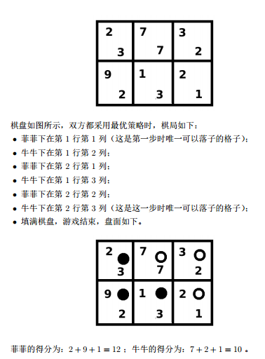

BZPRO
#5248. [2018多省省队联测]一双木棋
内存限制：512 MiB
时间限制：20 Sec
提交
提交记录
讨论
题目描述
菲菲和牛牛在一块n行m列的棋盘上下棋，菲菲执黑棋先手，牛牛执白棋后手。棋局开始时，棋盘上没有任何棋子，
两人轮流在格子上落子，直到填满棋盘时结束。落子的规则是：一个格子可以落子当且仅当这个格子内没有棋子且
这个格子的左侧及上方的所有格子内都有棋子。
棋盘的每个格子上，都写有两个非负整数，从上到下第i行中从左到右第j列的格子上的两个整数记作Aij、Bij。在
游戏结束后，菲菲和牛牛会分别计算自己的得分：菲菲的得分是所有有黑棋的格子上的Aij之和，牛牛的得分是所
有有白棋的格子上的Bij的和。
菲菲和牛牛都希望，自己的得分减去对方的得分得到的结果最大。现在他们想知道，在给定的棋盘上，如果双方都
采用最优策略且知道对方会采用最优策略，那么，最终的结果如何
输入格式
第一行包含两个正整数n,m，保证n,m≤10。
接下来n行，每行m个非负整数，按从上到下从左到右的顺序描述每个格子上的
第一个非负整数：其中第i行中第j个数表示Aij。
接下来n行，每行m个非负整数，按从上到下从左到右的顺序描述每个格子上的
第二个非负整数：其中第i行中第j个数表示Bij
n, m ≤ 10 ， Aij, Bij ≤ 100000
输出格式
输出一个整数，表示菲菲的得分减去牛牛的得分的结果。
样例
样例输入
2 3
2 7 3
9 1 2
3 7 2
2 3 1
样例输出
2
数据范围与提示
